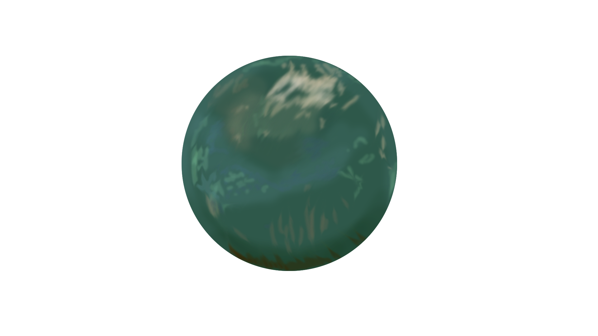

Discover Saturn's Moon, Titan!
Titan, Saturn's largest moon, is an atmospheric-world. It's earliest recorded discovery was by Christiaan Huygens in 1655.
This moon is one of the few celestial bodies in our Solar System with a proper, dense, atmosphere. While this atmosphere makes direct observation difficult, thanks to the Cassini-Huygens mission, we know that Titan has several layers. It's atmosphere is mostly methane and nitrogen while it's core is ice-VI, a type of ice that is formed not because of temperature, but because the pressure is large enough that the water molecules effectively freeze in it's solid state. Other layers include liquid salt water, and a crust of water-ice.
Titan's orbital period is only that of 16 days. It is slightly larger than Mercury, and only has exerts a fraction of gravity compared to Earth's. We can observe weather patterns, similar to Earth's. The primary difference between the two being instead of water, Titan has liquid methane.
Titan is not just ice, water, methane, and nitrogen. We have been able to observe sand dunes settling on the surface thanks to the Cassini mission. These dunes are similar in appearance to deserts on Earth, though the "sand" is quite a bit darker. Due to the few impact craters visibile on the moon, it is thought that this moon is quite a bit younger compared other parts of the Solar System.
Titan, largely because of it's atmosphere, is the selected target for NASA's Dragonfly mission. That mission is expected to launch in July of 2028. Because it is a lander, they will be attempting to land on it's surface to gather data that would otherwise be incredibly difficult or impossible to collect with our current technology.